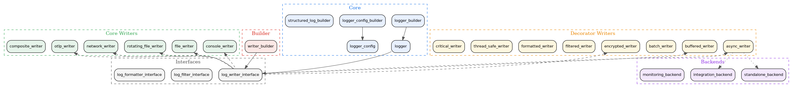

- Generated by
 1.12.0
1.12.0
|
Logger System 0.1.3
High-performance C++20 thread-safe logging system with asynchronous capabilities
|
Logger System is a high-performance C++20 thread-safe logging framework with asynchronous capabilities. It provides a modular, interface-driven architecture with pluggable components via the Decorator pattern, targeting 4M+ messages per second throughput with sub-microsecond latency.
The framework offers 17+ writer implementations, structured logging, OpenTelemetry integration, encrypted logging, and flexible decorator-based composition through a fluent builder API.
| Category | Feature | Description |
|---|---|---|
| Writers | Console Writer | Thread-safe colored console output |
| Writers | File Writer | Basic file logging with path validation |
| Writers | Rotating File Writer | Size-based file rotation with retention |
| Writers | Network Writer | Remote log shipping over TCP/UDP |
| Writers | OTLP Writer | OpenTelemetry Protocol export (HTTP/gRPC) |
| Decorators | Async Writer | Lock-free queue with configurable depth (default 10000) |
| Decorators | Buffered Writer | Memory-buffered writes with flush policies |
| Decorators | Batch Writer | Batched writes for throughput optimization |
| Decorators | Encrypted Writer | AES-256 encryption via OpenSSL |
| Decorators | Filtered Writer | Level and pattern-based log filtering |
| Decorators | Formatted Writer | Pluggable log message formatting |
| Decorators | Thread-Safe Writer | Mutex-guarded writer wrapper |
| Decorators | Critical Writer | Guaranteed delivery for critical logs |
| Composition | Composite Writer | Fan-out to multiple writer targets |
| Builder | Writer Builder | Fluent API for decorator chain composition |
| Builder | Logger Config Builder | Configuration-driven logger construction |
| Structured | Structured Log Builder | Key-value structured logging with context |
| Security | Secure Key Storage | Protected key management for encrypted logging |
| Backends | Standalone Backend | std::jthread-based async I/O (default) |
| Backends | Integration Backend | thread_system pool integration (optional) |
| Backends | Monitoring Backend | Metrics-aware backend with monitoring hooks |
The framework is organized into layers. Writers are composed using the Decorator pattern, with the Writer Builder providing a fluent API for chain construction.

New to logger_system? Start with these guided pages, written for external developers integrating the framework for the first time:
| Resource | Audience | Description |
|---|---|---|
| Tutorial: Basic Logging | Newcomers | Console + file writers, log levels, structured logging. Three runnable snippets. |
| Tutorial: Decorator Composition | Intermediate | Decorator pattern, ordering rules, custom decorators. Three composition recipes. |
| Tutorial: Production Configuration | Advanced | High-throughput, async, rotation, OpenTelemetry export. Three production scenarios. |
| Frequently Asked Questions | Reference | Ten of the most common configuration questions, with concise answers. |
| Troubleshooting Guide | Operations | Lost messages, file permissions, queue overflow, performance degradation, decorator pitfalls. |
The Examples examples directory contains 16 runnable programs that correspond one-to-one with the tutorials.
A minimal example using the logger builder with console and file writers:
| Module | Directory | Key Headers | Description |
|---|---|---|---|
| Core | core/ | logger.h, logger_builder.h, logger_config.h | Logger, builder, and configuration |
| Interfaces | interfaces/ | log_writer_interface.h, log_filter_interface.h | Core abstractions for writers, filters, formatters |
| Writers | writers/ | console_writer.h, file_writer.h, rotating_file_writer.h | 17 writer implementations (core + decorators) |
| Builders | builders/ | writer_builder.h | Fluent API for decorator chain composition |
| Backends | backends/ | standalone_backend.h, integration_backend.h | Async I/O backends (standalone or thread_system) |
| Formatters | formatters/ | (formatter implementations) | Log message formatting |
| Filters | filters/ | (filter implementations) | Level and pattern-based filtering |
| Security | security/ | secure_key_storage.h | AES-256 key management and audit logging |
| OTLP | otlp/ | otlp_context.h | OpenTelemetry context and export support |
| Structured | structured/ | structured_log_builder.h | Key-value structured logging |
| Adapters | adapters/ | common_logger_adapter.h | Adapter for common_system ILogger interface |
| Example | Source | Description |
|---|---|---|
| Basic Usage | basic_usage.cpp | Simple logger setup with console and file writers |
| Logger Config Builder | logger_config_builder_example.cpp | Configuration-driven logger construction |
| Decorator Usage | decorator_usage.cpp | Manual decorator pattern composition |
| Writer Builder | writer_builder_example.cpp | Fluent builder API for writer chains |
| Composite Writer | composite_writer_example.cpp | Fan-out logging to multiple targets |
| Distributed Logging | distributed_logging_demo.cpp | Network-based distributed log collection |
| Structured Logging | structured_logging_example.cpp | Key-value structured log entries |
| Security Demo | security_demo.cpp | Encrypted logging with secure key storage |
| Critical Logging | critical_logging_example.cpp | Guaranteed delivery for critical log messages |
| Custom Writer | custom_writer_example.cpp | Implementing a custom log writer |
| Adapter Pattern | adapter_pattern_poc.cpp | Adapting logger to common_system ILogger |
| DI Pattern | di_pattern_example.cpp | Dependency injection with logger |
| Monitoring Integration | monitoring_integration_example.cpp | Metrics and monitoring hooks |
| Advanced Features | advanced_features_demo.cpp | Advanced configuration and usage patterns |
| Metrics Demo | metrics_demo.cpp | Logger metrics collection and reporting |
Logger System is Tier 2 in the kcenon ecosystem, depending on common_system (required) and thread_system (optional).
| System | Tier | Relationship | Repository |
|---|---|---|---|
| common_system | 0 | Required dependency (ILogger, Result<T>) | https://github.com/kcenon/common_system |
| thread_system | 1 | Optional dependency (thread pool for async I/O) | https://github.com/kcenon/thread_system |
| monitoring_system | 3 | Consumer (uses logger for event logging) | https://github.com/kcenon/monitoring_system |
| network_system | 4 | Consumer (uses logger for network diagnostics) | https://github.com/kcenon/network_system |